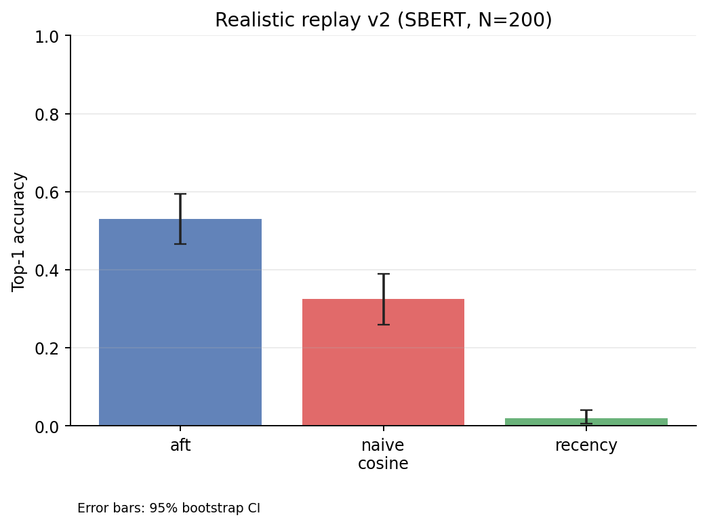
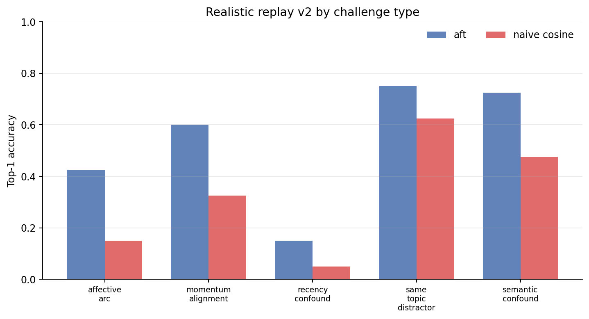
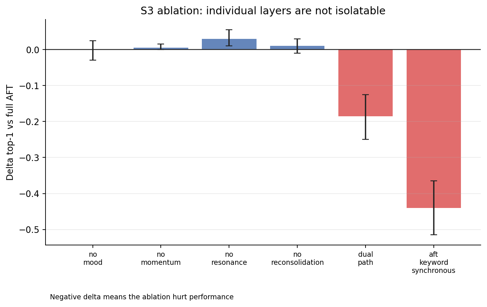
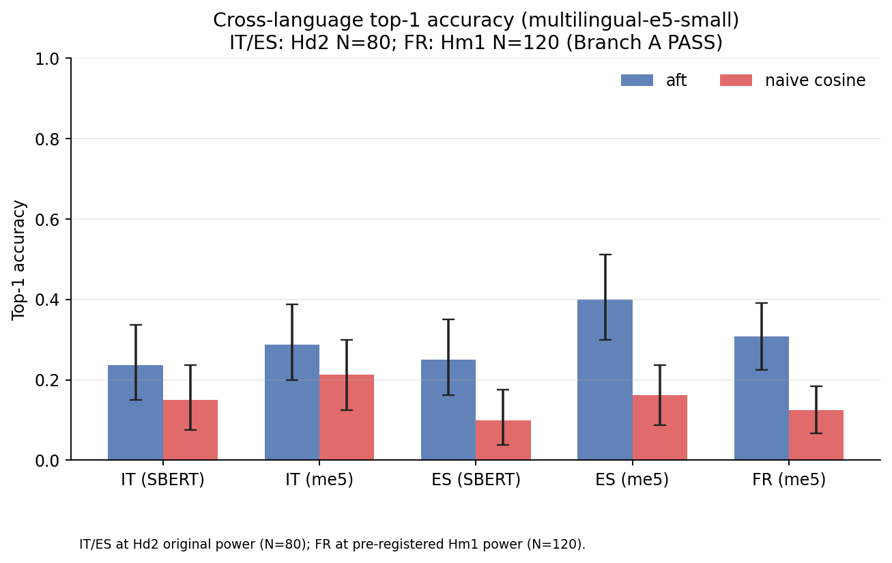
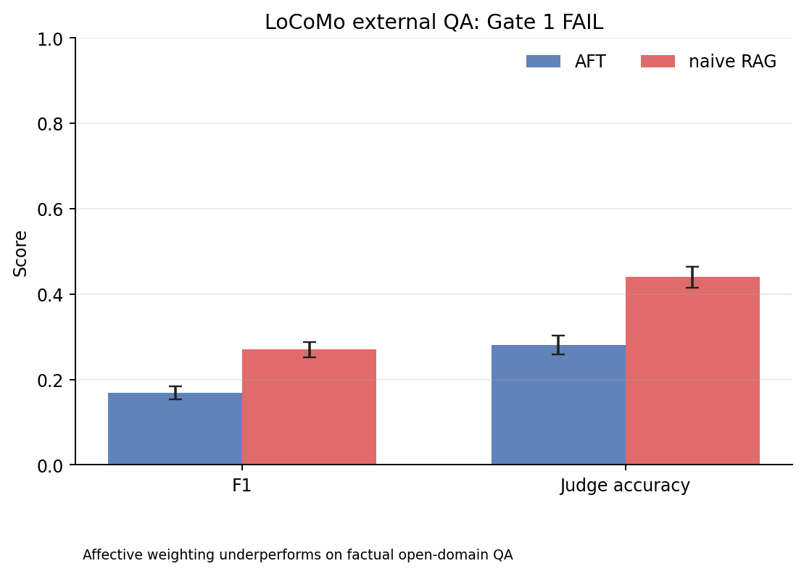

Current Evidence and Study Ladder¶
This page summarizes what the project currently supports, what is validated, and which study steps come next. It is meant to keep implementation status, public claims, and research ambition aligned.
Study ladder¶
The project now uses a five-step evidence ladder:
- Theory fidelity: does the implementation behave coherently with the psychological/computational theory it encodes?
- Controlled retrieval behavior: does the retrieval engine change ranking in the intended affect-aware direction under a constrained protocol?
- Appraisal quality: does the appraisal layer produce directionally useful outputs on natural-language inputs?
- Realistic memory tasks: does the system help on multi-session, agent-like scenarios where memory must persist and update over time?
- Human / ecological validation: do humans perceive better affective coherence or utility, and does the behavior track human-like emotional memory in realistic settings?
Current repo strength is concentrated in steps 1–4. Step 4 now has
controlled evidence: the v2 realistic replay benchmark (N=200, 5 challenge
types × 40) shows a decisive advantage over naive_cosine on both SBERT and
e5-small-v2 embedders. Step 5 remains open research work.
Terminology — the two senses of "affect-free"¶
The research documents use "affect-free" in two distinct senses; conflating them misreads the falsified claims:
- Affect-free dataset (
noAF) — events carry no preset valence/arousal fields and queries nostatefield. The content is still affect-rich; the affect signal must be inferred end-to-end by the appraisal engine. This is a property of the annotation, not of the content (realistic_recall_v3_noAF,v4_noAF). - Affect-free query — a query whose target is determinable from semantics alone (the wording uniquely identifies the correct event). This is a property of the query, and it is the regime where naive cosine is hard to beat (Addendum P: cosine 0.887).
The falsified claim appraisal_llm_real_dual_path combines both senses: LLM-inferred
affect (noAF annotation) evaluated on semantically determinable (affect-free)
queries. It does not speak to affect-discriminative queries, where semantics
ties and the affect dimension must break the tie — that regime is covered by the
oracle-affect claims (Hd1/Hd2) and, for LLM-inferred affect, by Addendum Q
(realistic_recall_v5_gate, per-query gate_label).
Claim matrix¶
Canonical source: claim_validation_matrix.json.
This JSON file is the repo's versioned source of truth for claim wording,
evidence level, and still-open gaps.
Status legend
Implemented: present in the codebase, but not externally validated as valuable.Controlled evidence: supported under a narrow, documented benchmark protocol.Strong intra-theory evidence: strongly supported inside the theory the implementation operationalizes.Early controlled evidence: initial task or appraisal evidence exists, but remains narrow.Not established: not supported by current public evidence.
| ID | Claim area | Status | Evidence level | Allowed public wording | Current evidence | Not yet shown | Next study |
|---|---|---|---|---|---|---|---|
aft_multilayer_engine |
Architecture | Implemented | 1_theory_fidelity |
AFT is implemented as a coherent multi-layer memory engine. | Public API, engine/retrieval/state modules, sync/async parity tests. | External validation of architectural value. | Keep API/docs aligned while external evaluations grow. |
retrieval_affect_aware |
Retrieval behavior | Controlled evidence | 2_controlled_retrieval |
Retrieval is affect-aware, not semantic-only. | 127 fidelity cases validate affect-aware ranking logic. The controlled quadrant benchmark (SBERT) ties AFT and naive_cosine at recall@5 = 0.80 (ceiling effect, N = 20 items) while clearly beating recency (Δ = −0.55, p < 0.001). The realistic replay v2 benchmark shows AFT top1 = 0.53 vs naive_cosine = 0.33 with SBERT (N = 200; Δ=+0.205 [0.150,0.265], p_bootstrap<0.001) and 0.50 vs 0.34 with e5-small-v2 (Δ=+0.155 [0.090,0.225], p_bootstrap<0.001). Hd2 confirms architecture-level advantage on v2 and Italian cross-language; S3 shows no single layer is isolatably responsible. Addendum M FR PASS (2026-05-16): French slice (me5, N=120, 2-session) AFT top1=0.31 vs naive_cosine=0.12, Δ=+0.18 [0.11, 0.26], p<0.0001, Hedges g=0.424 — cross-language signal confirmed. | General downstream superiority over production memory systems. IT/ES cross-language at me5 N=120 remains open (Hd2 Branch C FAIL). | Expand external and realistic retrieval evaluations. |
theory_faithful_operationalization |
Theory fidelity | Strong intra-theory evidence | 1_theory_fidelity |
The implementation is faithful to the theories it operationalizes. | 127 fidelity cases across 20 phenomena validate expected intra-theory behavior. S3 ablation (N=200, SBERT and e5-small-v2) covers all 7 AFT mechanisms; the 8-variant ablation shows system-level advantage but no isolatable single-layer attribution. Hi3 PASS (Addendum I closure, 2026-05-06, N=500): cross-embedder amplification on semantic_confound confirmed (Δ=+0.090, d=0.257, p_adj=0.0234); Hi3_recency PASS; Hi3_arc FAIL. |
Ecological correspondence to human emotional memory. LLM-appraisal dual-path advantage on affect-free data is falsified (Addendum G/P — see appraisal_llm_real_dual_path). Hi2 mechanism for amplification not localised at link-count instrumentation level. |
Human and behavioral validation. |
appraisal_directionally_useful |
Appraisal quality | Early controlled evidence | 3_appraisal_quality |
Appraisal is directionally useful. | The appraisal-quality benchmark provides early controlled evidence on natural-language inputs. | Calibration across models, domains, and languages. | Appraisal robustness study across models, domains, and languages. |
replayable_multi_session_help |
Realistic tasks | Controlled evidence | 4_realistic_tasks |
AFT helps on replayable multi-session memory tasks (v2, N=200, SBERT: AFT top1=0.53 vs naive_cosine=0.33, Δ=+0.21 [0.15,0.27], p<0.001; e5-small-v2: AFT top1=0.50 vs 0.34, Δ=+0.16 [0.09,0.22], p<0.001). | Realistic replay v2 (50 scenarios, 200 queries, 5 challenge types × 40). SBERT bge-small-en: AFT top1=0.53 vs naive_cosine=0.33, Δ=+0.205 [0.150,0.265], p_bootstrap<0.001, d=0.49. e5-small-v2: AFT top1=0.50 vs naive_cosine=0.34, Δ=+0.155 [0.090,0.225], p_bootstrap<0.001, d=0.31. Advantage holds on both embedder classes. Architecture attribution confirmed: Hd1 PASS (Addendum D, seed=1, 2026-04-27); Gate 3 CLOSED. | General superiority on external open-domain QA (LoCoMo Gate 1 FAIL — AFT F1=0.168 vs naive_rag=0.271; Add. J Pareto sweep Hj1 FAIL — base_weights tuning cannot close the gap) or completed human/ecological validation. | Execute human-evaluation pilot. |
locomo_external_qa_negative |
External benchmarks | Controlled evidence | 4_realistic_tasks |
On the LoCoMo conversational QA benchmark (1986 QA pairs), AFT retrieval underperforms a naive RAG baseline (F1 0.168 vs 0.271; Gate 1 not met). | Pre-registered S1 run completed 2026-04-27. H1 and H2 both fail (Δ<0, p_one=1.0). Add. J Pareto sweep (2026-05-06): 10 weight configs × 200-QA subsample, Hj1 FAIL — no config matches naive_rag on any category. Best: W2 aggregate F1=0.1765 vs naive_rag=0.2092. Per-task base_weights tuning line closed. Addendum L (2026-05-19): closed-loop heuristic routing on LoCoMo 200-QA smoke test. Hl1 FAIL (Δ=−0.017, below +0.02 threshold and in wrong direction). Hl2 FAIL (Δ=−0.081 vs naive_rag). Hl3 data-collection issue (classifier log bug), resolved 2026-06-11: classifier accuracy 0.465 (0.600 excl. adversarial), multi_hop undetected (2/28). Branch B verdict: routing ships as optional feature. | Whether selective affect suppression or factual/affective dual branching could close the gap. Closed-loop query-type routing also FAIL (Hl1 Branch B). | Architectural approaches beyond weight tuning: selective affect suppression, factual/affective dual-branch retrieval, or hybrid systems. |
resonance_amplification_e5 |
Retrieval behavior | Controlled evidence | 2_controlled_retrieval |
Hi3 PASS (N=500, seed=1): e5-small-v2 shows larger resonance interference than SBERT on semantic_confound queries (Δ=+0.090 [0.030,0.160], d=0.257, Holm-adj p=0.0234). The v2 per-challenge finding (post-hoc Δ=+0.100) is confirmed as not a sample-size artefact. | Hi3 confirmatory, Addendum I closure (2026-05-06). Holm m=3 family, paired bootstrap n=10,000 seed=1. Primary PASS: Δ=0.090, d=0.257. | Mechanism: link-count instrumentation shows both embedders saturate top-5 cap (mean≈5.0); Hi2 spreading-activation over-fire hypothesis not yet localised. | Link-type/strength instrumentation to localise the Hi2 mechanism channel. |
Hi3_recency |
Retrieval behavior | Controlled evidence | 2_controlled_retrieval |
Hi3_recency PASS (secondary, Holm-corrected): e5 resonance interference exceeds SBERT on recency_confound queries (Δ=+0.070 [0.020,0.130], d=0.239, Holm-adj p=0.0234, N=500). | Hi3_recency secondary PASS in Holm m=3 family (Addendum I closure, 2026-05-06): Δ=0.070, CI=[0.020,0.130], p_adj=0.0234, d=0.239. | Mechanism; replication on independent dataset. | Contingent on Hi3 mechanism study. |
Hi3_arc |
Retrieval behavior | Not established | 2_controlled_retrieval |
Hi3_arc FAIL: no significant amplification on affective_arc queries (Δ=+0.010 [-0.020,0.050], d=0.058, Holm-adj p=0.3795, N=500). The embedder gap does not extend to affective_arc at this sample size. | Hi3_arc secondary FAIL (Addendum I closure, 2026-05-06): Δ=0.010, p_adj=0.3795, d=0.058. Embedder amplification scoped to semantic_confound and recency_confound. | Whether larger N or different dataset would show signal. | No active follow-up; Hi3_arc FAIL scopes the amplification claim. |
models_human_emotional_memory |
Ecological validity | Not established | 5_human_ecological |
The system is theory-inspired, but does not yet have human or ecological validation. | Theory-inspired design only. | Human behavioral correspondence. | Pilot human evaluation with completed ratings and external benchmarks. |
realistic_replay_vs_sota |
Retrieval behavior vs SOTA | Controlled evidence | 4_realistic_tasks |
On the realistic multi-session replay benchmark, AFT with preset affect labels achieves top1_accuracy = 0.535 vs Mem0 = 0.330 and LangMem = 0.365 — an advantage of Δ +0.21 (d=0.51) with non-overlapping 95% CIs. Neither LLM-backed system outperforms naive cosine on this benchmark. | H_v2_sota PASS (exploratory, 2026-05-07, gpt-4.1-mini, sbert-bge, N=200, n_bootstrap=10000, seed=0). AFT top1=0.535 vs Mem0=0.330 and LangMem=0.365; both SOTA systems below naive_cosine=0.325. | Advantage without oracle-affect (Hg1 FAIL). Advantage on factual QA (LoCoMo S1 FAIL). | SOTA replication with automatic appraisal engine (would require non-circular affect-free dataset). |
appraisal_llm_real_dual_path |
Appraisal quality | Falsified | 3_appraisal_quality |
Hg1 FAIL (twice): AFT with LLMAppraisalEngine (dual-path, gpt-5-mini) does not outperform naive cosine on affect-free queries. Original Hg1 (realistic_recall_v3_noAF, N=200): delta=-0.010, p=0.367. Re-run with the recalibrated SEC->affect mapping on a leakage-free set disjoint from the calibration data (Addendum P, realistic_recall_v4_noAF, N=160): delta=-0.087 [-0.144,-0.031], p=0.0018, d=-0.242 -- naive cosine significantly ahead. The LLM affect signal is real (beats neutral, Hp2 PASS) and the dual-path schedule is essential (beats synchronous, Hp3 PASS, d=0.95), but the full system still trails pure cosine when queries are affect-free. The oracle-affect circularity remains the scope boundary of the Hd1/Hd2 claims. | Hg1 (realistic_recall_v3_noAF, N=200) FAIL: delta=-0.010, p=0.367. Addendum P re-run with recalibrated M1 on leakage-free realistic_recall_v4_noAF (40 scen / 160 q, disjoint from v3): aft_llm_dual top1=0.800 vs naive_cosine 0.887, delta=-0.0875 [-0.144,-0.031], p=0.0018, d=-0.242 FAIL. Exploratory Hp2 dual>neutral PASS (+0.056, p=0.030); Hp3 dual>sync PASS (+0.512, d=0.95). Addendum Q (2026-06-11): affect-aware gating on realistic_recall_v5_gate (200 q, 100/100 gate-labelled). Hq1 FAIL (dual vs cosine on affective subset, Δ=−0.050; tiebreak type 0.160 vs 0.280), Hq3 FAIL (gated vs cosine, Δ=−0.025), Hq4 oracle-gate also below cosine (Δ=−0.045, p=0.0024); Hq2 PASS (gated > always-on, Δ=+0.080, p_holm=0.0009; gated == cosine on affect-free half, Hq5 Δ=0.000). Branch C: routing line closed. | Recalibration (Addendum O) did not change the affect-free verdict; advantage scoped to oracle-affect (Hd1/Hd2). Dual-path > synchronous (Hp3) reaffirmed. Gating recovers the always-on penalty but cannot exceed cosine (Addendum Q); the bottleneck is the state-based channel, not the gate. | Affect-routing line closed (Addendum Q, Branch C). Residual (not scheduled): retrieve-time query appraisal as a new signal. |
What is strongest today¶
- Strongest evidence: theory-fidelity benchmarks. These are the clearest proof that the code behaves as designed.
- Second-best evidence: realistic replay v2 benchmark (N=200, 5 challenge
types × 40). SBERT bge-small: AFT top1=0.53 vs naive_cosine=0.33,
Δ=+0.205 [0.150,0.265], p_bootstrap<0.001, d=0.49. e5-small-v2: AFT
top1=0.50 vs 0.34, Δ=+0.155 [0.090,0.225], p_bootstrap<0.001, d=0.31.
The advantage holds on both SBERT and e5-small-v2 (two distinct
embedder classes), addressing G5. The controlled quadrant probe
(
affect_reference_v1) ties AFT and naive_cosine at SBERT ceiling (both 0.80) but confirms the benchmark discriminates clearly against the recency baseline. - Useful but narrow evidence: appraisal-quality checks and demo-level product behavior.
- Step-4 evidence upgraded to controlled: v2 (50 scenarios, 200 queries) shows decisive aggregate advantage on both embedder classes. Per-challenge breakdown (SBERT): semantic_confound 0.72 vs 0.47, affective_arc 0.42 vs 0.15, momentum_alignment 0.60 vs 0.33, same_topic_distractor 0.75 vs 0.62, recency_confound 0.15 vs 0.05. Hd2 confirms the architecture-level advantage; S3 shows that the advantage is not isolatable to a single AFT layer.
- Negative external result (Gate 1, 2026-04-27): On the LoCoMo conversational QA benchmark (1986 QA pairs, 10 conversations), AFT retrieval underperforms a naive RAG baseline (F1 0.168 vs 0.271; judge_acc 0.279 vs 0.441). Gate 1 was not met. AFT's affective weighting does not help on factual open-domain QA. Add. J Pareto sweep (2026-05-06, Hj1 FAIL): 10 weight configs × 200-QA stratified subsample — no config matches naive_rag on any category. Best: W2 aggregate F1=0.1765 vs naive_rag=0.2092. Per-task
base_weightstuning line closed. Seelocomo_external_qa_negativeinclaim_validation_matrix.json. - Addendum L (query-type routing, 2026-05-19): closed-loop heuristic routing on LoCoMo 200-QA smoke test. Hl1 FAIL (Δ=−0.017, below +0.02 practical threshold and in wrong direction). Hl2 FAIL (Δ=−0.081 vs naive_rag). Hl3 data-collection issue (classifier log bug — all predictions logged as
"unknown"); resolved 2026-06-11 (PR #52): the log was aligned by list index across the resume boundary — now matched by query text — and the ground-truth heuristic classifier accuracy on the exact 200-QA subset is 0.465 overall (0.600 excludingadversarial, which has no routable class), withmulti_hopessentially undetected (2/28, misread assingle_hop). This compounds the Hl1 reading: per-type weights could not have been applied to the right queries ~40% of the time. Branch B verdict: routing ships as optional feature; claim status unchanged. The LoCoMo negative result is robust to query-type routing. - Study-readiness improvement: the human-eval pilot is now operationally
specified as a 10-scenario, 2-condition (
aftvsnaive_cosine) protocol, but still awaits real completed ratings.
What should come next¶
The next recommended studies, in order:
- Protocol upgrade for comparative retrieval Standardize metadata, assumptions, and reporting for the existing benchmark.
- ~~Expand the realistic replay benchmark~~ Completed (v2.0): 50 scenarios / 200 queries; decisive advantage on SBERT and e5-small-v2 (both p_bootstrap<0.001). G4 + G5 addressed.
- Execute the human-eval pilot with completed ratings
Collect ratings on coherence, usefulness, continuity, and plausibility from
at least 3 raters (Krippendorff's alpha is wired and reported automatically
when
ratings.jsonlis filled). - ~~Run LoCoMo end-to-end for external benchmark validation~~
Completed 2026-04-27 (Gate 1 FAIL):
benchmarks/locomo/results.jsoncommitted. AFT F1=0.168 vs naive_rag F1=0.271 on 1986 QA pairs; both H1 and H2 fail Holm correction. Negative result — affective weighting does not improve open-domain factual QA. Claim ceiling unchanged; seelocomo_external_qa_negativeinclaim_validation_matrix.json.
S3 + Hd2 Closure (2026-05-04)¶
Study S3 — Layer Ablation @ N=200 (realistic_recall_v2)¶
Result files: benchmarks/ablation/results.v2.sbert.json, results.v2.e5.json
| Variant | SBERT top1 | e5 top1 | SBERT Δ vs full | e5 Δ vs full | S3 verdict |
|---|---|---|---|---|---|
| full | 0.54 | 0.51 | — | — | baseline |
| no_mood | 0.52 | 0.50 | -0.02 (NS) | -0.005 (NS) | Ha FAIL |
| no_resonance | 0.56 | 0.59 | +0.02 (NS) | +0.085 (SIG) | Hb FAIL |
| no_appraisal | 0.53 | 0.51 | -0.01 (NS) | +0.005 (NS) | Hc PASS (invariant) |
| no_momentum | 0.56 | 0.51 | +0.02 (NS) | 0.00 (NS) | Hd NS (exploratory) |
| dual_path | 0.34 | 0.24 | -0.20 (SIG) | -0.27 (SIG) | He1 replicated |
| no_reconsolidation | 0.54 | 0.53 | +0.01 (NS) | +0.03 (NS) | He2 null replicated |
| aft_keyword_synchronous | 0.09 | 0.06 | -0.45 (SIG) | -0.45 (SIG) | Hf1 replicated |
Key finding: Per-layer ablations (Ha, Hb) are NOT significant at power. The resonance layer shows an unexpected positive effect with e5 (Hb FAIL, opposite direction). The AFT architecture advantage is a system-level emergent property; no single layer is isolatably responsible.
Hf1 direct bootstrap (v2 secondary, n=10,000, seed=0):
| Embedder | dual_path | aft_kw_sync | Δ_Hf1 [95% CI] | p (one-tailed) | Verdict |
|---|---|---|---|---|---|
| SBERT | 0.350 | 0.095 | +0.255 [0.190, 0.320] | <0.001 | Hf1 PASS |
| e5 | 0.235 | 0.070 | +0.165 [0.110, 0.225] | <0.001 | Hf1 PASS |
Primary Hf1 (v1.4, N=100): see benchmarks/ablation/results.sbert.md.
Hd2 — Addendum D Generalization (realistic_recall_v2)¶
Result files: benchmarks/appraisal_confound/results.hd2.sbert.json, results.hd2_it.me5.json
| Study | Dataset/Embedder | N | Verdict | Δ (top1) | p | Cohen's d |
|---|---|---|---|---|---|---|
| Hd1 (primary) | v1 / SBERT | 100 | PASS | +0.230 | <0.001 | 0.515 |
| Hd2 (generalization) | v2 / SBERT | 200 | PASS | +0.125 | <0.001 | 0.286 |
| Hd2_IT (cross-language) | v2_it / me5 | 80 | PASS (raw) / borderline (family) | +0.163 | 0.012 | 0.289 |
| Hd2_ES (cross-language) | v2_es / SBERT | 80 | PASS (raw) | +0.138 | 0.045 | 0.233 |
| Hd2_ES (cross-language) | v2_es / me5 | 80 | FAIL | +0.113 | 0.110 | 0.189 |
| Hd2_IT_v120 (power top-up) | v2_it / me5 | 120 | FAIL | +0.058 | 0.276 | 0.105 |
| Hd2_ES_v120 (power top-up) | v2_es / me5 | 120 | FAIL | 0.000 | 1.000 | 0.000 |
Key finding (EN): AFT architecture advantage (aft_noAppraisal > naive_cosine) generalizes from v1 to v2 (smaller but above Δ>0.10 threshold). System-level advantage is real; per-layer attribution is not (S3 above).
Cross-language (Branch C): Pre-registered power top-up to N=120 on
multilingual-e5-small (IT + ES) does not establish the effect for either language.
Cross-language evidence is scoped to a single exploratory Spanish-SBERT result at
N=80 (Δ=+0.138, p=0.045). See benchmarks/preregistration_addendum_hd2_powertopup_closure.md.
FR realistic replay (Addendum M, Branch A PASS): A sibling study using the realistic.runner
2-session design on a natively-authored French dataset (30 scenarios, 120 queries, me5) shows a
strong AFT advantage: Δ=+0.18 [0.11, 0.26], p<0.0001, Hedges g=0.424. This is a different runner
and dataset format from the Hd2 appraisal_confound runs above (single-session). Cross-language
evidence is conditionally established: the 2-session realistic replay format generalises to FR; the
single-session Hd2 format does not. See benchmarks/preregistration_addendum_m_fr_closure.md.
Hm1 — French Multilingual Slice (Addendum M, Branch A PASS)¶
Claim: cross_domain_affect_replication — controlled_evidence (as of Addendum M, 2026-05-16)
Pre-reg: benchmarks/preregistration_addendum_m_fr.md
Closure: benchmarks/preregistration_addendum_m_fr_closure.md
| System | N | top1 [95% CI] | hit@k [95% CI] |
|---|---|---|---|
aft |
120 | 0.31 [0.23, 0.39] | 0.40 [0.32, 0.49] |
naive_cosine |
120 | 0.12 [0.07, 0.18] | 0.25 [0.17, 0.33] |
recency |
120 | 0.21 [0.14, 0.28] | 0.48 [0.39, 0.57] |
| Metric | Δ [95% CI] | p_bootstrap | Hedges g | N discordant |
|---|---|---|---|---|
| top1 (AFT vs naive) | +0.18 [0.11, 0.26] | 0.0000 | 0.424 | 26 / 120 |
| hit@k (AFT vs naive) | +0.15 [0.09, 0.22] | 0.0000 | 0.416 | 18 / 120 |
Branch A confirmed (pre-reg declared expected = FAIL).
Hk1 FAIL (Branch B, 2026-05-07): DailyDialog ecological replication — AFT does not outperform naive cosine on naturalistic short-turn dialogue (N=120 personas, 396 queries, multilingual-e5-small; Δ=-0.008, p_holm=1.000). Addendum M FR PASS (Branch A, 2026-05-16): native French scenarios, 2-session realistic replay (N=120, me5); AFT top1=0.31 vs naive_cosine=0.12, Δ=+0.18 [0.11, 0.26], p<0.0001, Hedges g=0.424.
Per challenge type (AFT top1): affective_arc 0.38, same_topic_distractor 0.42, recency_confound 0.29, semantic_confound 0.33, momentum_alignment 0.12. Momentum_alignment remains weak across all languages tested.
Hk1 — DailyDialog Ecological Replication (Branch B)¶
Claim: cross_domain_affect_replication — controlled_evidence (Hm1 FR PASS closes retry_planned)
Hk1 FAIL (Branch B, 2026-05-07): AFT does not outperform naive cosine on DailyDialog affect-conditioned retrieval (N=120 personas, 396 queries, multilingual-e5-small; Δ=-0.008, p_holm=1.000, d=-0.015). The realistic-recall advantage is regime-specific (curated affective benchmarks) and does not extend to naturalistic short-turn dialogue.
Result files: benchmarks/dailydialog/results.{json,md,protocol.json}
Pre-reg: benchmarks/preregistration_addendum_k_dailydialog.md
Closure: benchmarks/preregistration_addendum_k_dailydialog_closure.md
| Query type | N | AFT top1 | Cosine top1 | Δ | p_holm | d | Verdict |
|---|---|---|---|---|---|---|---|
| aggregate | 396 | 0.212 | 0.220 | −0.008 | 1.000 | −0.015 | FAIL |
| emotion_state_recall | 120 | 0.217 | 0.225 | −0.008 | 1.000 | −0.017 | FAIL |
| affect_conditioned_content | 120 | 0.175 | 0.217 | −0.042 | 1.000 | −0.088 | FAIL |
| affective_trajectory | 39 | 0.385 | 0.282 | +0.103 | 0.734 | +0.186 | FAIL (N=39) |
| cross_session_control | 117 | 0.188 | 0.197 | −0.009 | 1.000 | −0.017 | FAIL |
Branch B confirmed. AFT does not outperform naive cosine on naturalistic
DailyDialog at N=120. The affective_trajectory positive trend (d=0.186) is
an exploratory signal, not a confirmatory PASS (underpowered, p_holm=0.734).
Consistent with LoCoMo FAIL: advantage is regime-specific to curated
affective benchmarks with dense emotion content.
Hg1 Diagnosis — Appraisal Calibration (Addendum N, 2026-05-30)¶
The Hg1 null (LLM appraisal does not beat naive cosine on affect-free data) was diagnosed, not just observed. A calibration study (gpt-5-mini, N=150, seed 42) shows the appraisal layer is mis-calibrated, not blind: valence tracks the gold signal strongly (Pearson r ≈ 0.81–0.88) but carries a systematic positive bias (+0.169). A pre-registered prompt-only calibration attempt FAILED its criteria (Hn1 FAIL, Hn2 FAIL) — yet it nearly eliminated the valence bias (+0.169 → +0.044, below the 0.10 threshold) while leaving arousal untouched (−0.115 → −0.118) and regressing one gold case (15/15 → 14/15).
Takeaway: since valence carries the dominant weight in to_core_affect, the Hg1
null is — at least on valence — a calibration problem, not a capability one.
The prompt is the wrong lever for arousal, whose bias is driven by the
SEC→arousal mapping rather than prompt wording. Closure:
benchmarks/preregistration_addendum_n_appraisal_calibration_closure.md;
diagnostics in benchmarks/appraisal_diagnostics/.
Addendum Q — Affect-Aware Gating (Branch C, 2026-06-11)¶
The synthesis named in the Addendum P closure — apply affect only when the query is
affect-discriminative — was pre-registered (Hq1–Hq3, Holm m=3) and executed on
realistic_recall_v5_gate (50 scenarios / 200 queries, 100 affective / 100 affect-free
with ground-truth gate_label, frozen pre-run). Gating was implemented as an
adapter-level front-router (Amendment 1): affect-free → cosine index identical to the
baseline; affective → engine identical to aft_llm_dual.
Branch C confirmed. Hq1 FAIL: LLM-inferred affect loses to cosine on the affective
subset itself (0.090 vs 0.140; on the anchored affect_congruent_tiebreak type, 0.160 vs
0.280). Hq3 FAIL and Hq4 (perfect-gate arm) significantly below cosine (Δ=−0.045,
p=0.0024): no routing scheme can rescue a channel that loses in its own regime. The one
confirmatory PASS is Hq2 (+0.080, p_holm=0.0009): the front-router recovers the entire
always-on penalty — the gated arms score exactly cosine on the affect-free half (Hq5
Δ=0.000). Gating is a safe wrapper, not an advantage. Gate classifier: LLM gate accuracy
0.844 (affective recall 0.69); the oracle gate scores worse overall than the imperfect
LLM gate (0.450 vs 0.470) because misrouting affective queries to cosine accidentally
helps — the bottleneck is the channel, not the classifier.
Mechanistic reading. AFT retrieval signals are state-based: the query is never
appraised. The Hd1/Hd2 oracle-affect PASSes inject each query's state before retrieval —
the benchmark performs the query↔state alignment that real usage lacks. Addendum Q shows
the session trajectory does not supply that alignment for free: the oracle-affect boundary
is also a state-injection boundary. Construction limitation, disclosed:
affective_arc_blind queries hit a floor for every system (≤0.02 including cosine) under
cross-scenario accumulation (50 same-shape arcs make trajectory-only queries
under-determined); the verdict stands on the anchored tiebreak queries.
Closure: benchmarks/preregistration_addendum_q_affect_gating_closure.md;
results: benchmarks/appraisal_confound/results.hq.{json,md,protocol.json}.
Power notes (ex-post)¶
Observed power estimates for results with d < 0.30 or p near α, using the
one-tailed paired t-test approximation power = Φ(d·√N − z_α) with z_α = 1.645
(α=0.05). These are approximate — the actual tests use paired bootstrap on binary
vectors, not t-tests.
| Study | N | d (Cohen) | ~Power | Interpretation |
|---|---|---|---|---|
| Hd2 EN SBERT | 200 | 0.286 | ~99% | Adequately powered |
| Hd2_IT me5 | 80 | 0.289 | ~83% | Moderately powered |
| Hd2_ES SBERT | 80 | 0.233 | ~67% | Borderline; result significant but narrow margin |
| Hd2_ES me5 | 80 | 0.189 | ~52% | Underpowered for this d; FAIL plausibly Type II |
| Hd2_IT me5 (v120) | 120 | 0.105 | ~38% | Executed at declared power: FAIL; d collapsed vs N=80 |
| Hd2_ES me5 (v120) | 120 | 0.000 | ~5% | Executed at declared power: FAIL; Δ=0.000 (exact null) |
| Hm1 FR me5 (realistic.runner) | 120 | 0.424 | >99% | Branch A PASS; strong effect, well-powered |
| S2 H4 affective_arc SBERT | 40 | ~0.55 (est.) | ~97% | Adequately powered |
| S2 H5 recency_confound SBERT | 40 | ~0.20 (est.) | ~35% | Underpowered; marginal FAIL expected |
| S2 H6 momentum_alignment e5 | 40 | ~0.01 (est.) | ~5% | Near-zero true effect or incompatible geometry |
Implications: - Hd2_ES me5 FAIL (p=0.110) at N=80 was consistent with Type II error (d≈0.19 at N=80 → ~52% power). Pre-registered power top-up to N=120 was executed (2026-05-07): Δ=0.000, p=1.00. The original miss was not Type II; the true d is near zero at this test configuration. - S2 H5 recency_confound (SBERT) at N=40 is substantially underpowered. The marginal p_adj=0.054 is consistent with a real but small effect (d≈0.20). Confirming H5 would require N≥100 per challenge type. - S2 H6 momentum_alignment (e5) shows near-zero effect (Δ=0.025), suggesting the signal is absent for this embedder rather than underpowered. - Results with high power (Hd2 EN SBERT, H3, H4) are robust to replication.
Evidence figures¶
These figures are generated from the committed benchmark JSON artefacts with
make research-figures; they do not rerun long benchmark jobs.





Reading guide¶
- For the theoretical motivation: Design Principles
- For neighboring systems: State of the Art and Related Work
- For known limitations: Limitations